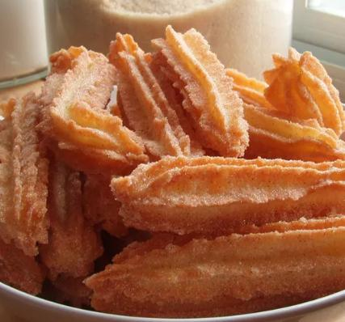

Churros Recipe

Description
Crunchy and sweet churros ready to be your day and nighttime snacks
Referenced from: Allrecipes Churros II Recipe
Ingredient List
- 2 quarts vegetable oil
- 1 cup of water
- 1/2 cup margarine
- 1 cup all-purpose flour
- 1/4 teaspoon salt
- 3 eggs
- 1/4 cup white sugar
- 1/4 teaspoon ground cinnamon
Steps
- Heat oil (should be about 1 1/2 inches deep) to 360 degree F (180 degrees C) in a heavy deep skillet or deep-fryer.
- In a medium saucepan, heat water and margarine to a rolling boil
- Combine flour and salt and stir into boiling mixture
- Reduce heat to low and stir vigorously until mixture forms a ball about 1 minute
- Remove from heat and beaet in the eggs one at a time
- Spoon mixture into pastry bag fitted with a large star tip
- Squeeze out 4 inch long strips of dough directly into hot oil
- Fry 3 or 4 strips at once until golden brown (about 2 minutes each side)
- Remove from hot oil to drain on paper towels
- Stir together the sugar and cinnamon
- Roll churros in the mixture while hot and enjoy!